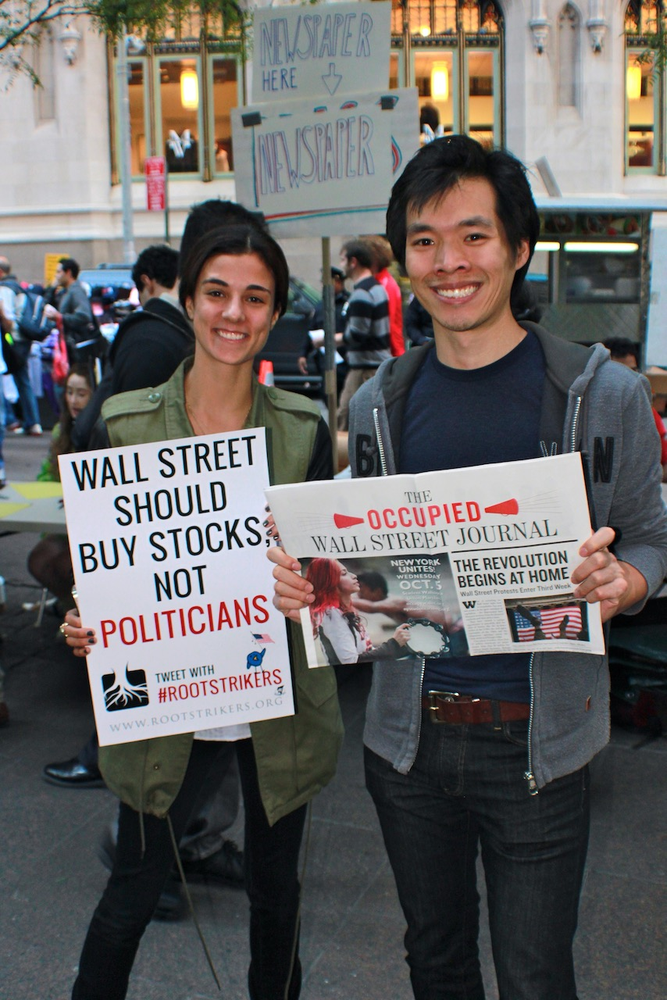

Occupy Wall Street – Zuccotti Park
New York, New York

Documentary Photography Archive
A journey through the Occupy movement, preserved one photograph at a time.
Photographs by Vance Petrunoff
Enter the archive ↓About the Archive
Between October 2011 and May 2012, I traveled across the United States documenting the Occupy movement as it unfolded. What began with a visit to Zuccotti Park in New York became a documentary journey through Occupy encampments in cities across America.
This website presents the complete record of every Occupy encampment I personally photographed during that journey. Each entry represents a specific visit and links directly to the complete Flickr album, organized by the exact date the photographs were made.
My attention extended beyond marches, arrests, and confrontation. I also photographed handmade signs, camp life, volunteers, kitchens, libraries, assemblies, artists, musicians, tents, conversations, and the countless small acts of cooperation that sustained the camps.
Many of the handmade signs preserved in these photographs have yet to be systematically cataloged by researchers. They remain primary visual documents: spontaneous expressions of humor, anger, hope, solidarity, political imagination, and the language of the 99%.
The Complete Record
Each collection opens in a new tab on Flickr.
New York, New York
Berkeley, California
Berkeley, California
Seattle, Washington
Sonoma, California
Oakland, California
San Francisco, California
Sonoma, California
Oakland, California
Sonoma, California
Honolulu, Hawaii
Los Angeles, California
Sacramento, California
Davis, California
Davis, California
Chicago, Illinois
Vacaville, California
Sebastopol, California
A journey through the Occupy movement, preserved one photograph at a time.
Recurring Themes
Cardboard, marker, paint, fabric, humor, anger, and hope. The signs form an uncataloged visual language of the movement and preserve the words of ordinary participants.
Tents, pathways, sleeping areas, meetings, conversations, music, art, and the daily rhythm of temporary communities built in public space.
Kitchens, information tables, libraries, medical stations, cleaning crews, and the practical labor that allowed each occupation to function.
From Witness to Participant
In 2011–2012, I traveled from one Occupy encampment to the next—beginning in New York at Zuccotti Park, then continuing through Seattle, Los Angeles, San Francisco, Oakland, Sonoma, Chicago, and beyond.
At each new camp, I arrived with prints made at previous locations: portraits of occupiers, handmade signs, tents and assemblies, moments of debate, solidarity, resistance, and everyday life. The photographs were taped up, passed around, or displayed informally on the ground.
The documentation became a living, mobile part of the movement. Each camp saw reflections of the ones before it, creating a visual chain and a sense of shared struggle and interconnected energy across cities.
The Occupying Occupy album records that journey: images of the 99% carried forward, one camp at a time.
The Archive in Public
The archive has lived in several forms: shared inside Occupy encampments, presented as an immersive DIY exhibition, published as a book, and returned to the gallery as a historical record.
2012
Solo exhibition
Fort Mason Center, San Francisco
September 18, 2012
With limited space and funds, the exhibition embraced the do-it-yourself ethos of Occupy. Prints were mounted on hand-cut cardboard and secured with duct tape, packing tape, and string—the same humble materials used for signs, banners, and shelters in the camps.
There were no sterile white walls. Visitors moved among the images as if walking through tents and assemblies. The installation transformed the venue into an extension of the protest and created an immersive sense of being inside the camp.
The accompanying album documents the build-up, hanging process, and final installation. Most of those photographs were made with an iPhone 4 or other mobile phones of the period. Their grain, low resolution, and digital noise are part of the record—real-time grit rather than polished hindsight.
View the Fort Mason exhibition album →2026
ONE Gallery Sofia
1 Dyakon Ignatiy Street, Sofia, Bulgaria
September 1–15, 2026
The Sofia exhibition returns the archive to my country of birth and presents the Occupy movement through the perspective of time. It brings together the camps, the handmade signs, the volunteers, daily life, and the journey of the photographs themselves.
The exhibition is both a historical reflection and a personal circle completed: I left Bulgaria in 1985 in search of freedom and decades later found myself photographing Americans exercising that freedom in the public squares and streets of their own country.
Visit ONE Gallery →Essay
In the autumn of 2011, a small group of demonstrators gathered in Zuccotti Park in New York City. Few could have imagined that their protest would grow into one of the most influential grassroots movements of the early twenty-first century. Within weeks, similar occupations had appeared in hundreds of cities across the United States and around the world.
I did not set out to document history. I simply found myself witnessing a remarkable moment in American public life and felt compelled to record it.
For months I traveled across the United States, photographing Occupy encampments in cities large and small. From New York to California, from university campuses to city parks, each occupation possessed its own character, yet all shared a common desire to question growing economic inequality, corporate influence, and the relationship between citizens and their democracy.
As a photographer, I was less interested in slogans than in people.
News coverage often focused on dramatic confrontations, arrests, and conflict. While those moments certainly existed, they were only part of the story. Behind the headlines was another reality: volunteers preparing meals, strangers engaged in thoughtful conversations, musicians performing, artists creating signs, libraries assembled from donated books, and communities attempting—however imperfectly—to imagine new ways of living together.
These photographs seek to preserve those quieter moments.
My own perspective is shaped by an unusual personal journey. I was born in Bulgaria and spent my early life under a communist system where public dissent carried serious consequences. After leaving Bulgaria in 1985 and building a new life in the United States, I came to appreciate the freedoms that allow citizens to assemble peacefully and express disagreement with their government.
That background did not determine what I photographed, but it influenced how I looked. I understood that the freedom to gather in public, to debate openly, and even to challenge authority is one of the defining characteristics of a democratic society.
This exhibition is not intended to argue for or against the Occupy movement. It is instead a visual record of a unique moment when thousands of ordinary people believed they could reshape the national conversation. Whether one agrees with their ideas or not, the movement became part of American history.
Nearly fifteen years have passed since these photographs were made.
Many of the tents have disappeared. The encampments are gone. The signs have faded. Yet the questions raised during those months—about inequality, opportunity, political participation, and the meaning of democracy—continue to resonate around the world.
Photography has the ability to preserve moments that would otherwise disappear. It allows us to revisit not only events but also emotions, hopes, uncertainties, and the faces of people who briefly came together believing they could make a difference.
That is what these photographs attempt to remember.
For me, this exhibition completes an unexpected circle. In 1985, I left Bulgaria in search of freedom. Decades later, I found myself behind the camera, documenting Americans exercising that same freedom in the public squares and streets of their own country. History rarely follows a straight line. Neither do our lives.
The Book
A photographic publication presenting 142 color photographs from Occupy encampments across the United States.
View on Apple BooksAbout the Photographer
Vance Petrunoff is a Bulgarian-American photographer born in Sofia, Bulgaria. He left communist Bulgaria in 1985 and built a new life in the United States. Between 2011 and 2012, he traveled across the country documenting Occupy encampments and the people who shaped them.
His Occupy archive is preserved through camp-by-camp Flickr collections, the Apple Books publication Occupy USA, exhibitions, and this website.
A journey through the Occupy movement, preserved one photograph at a time.
18 Occupy encampments.
October 2011 – May 2012.
One photographer.
One archive.
— Vance Petrunoff